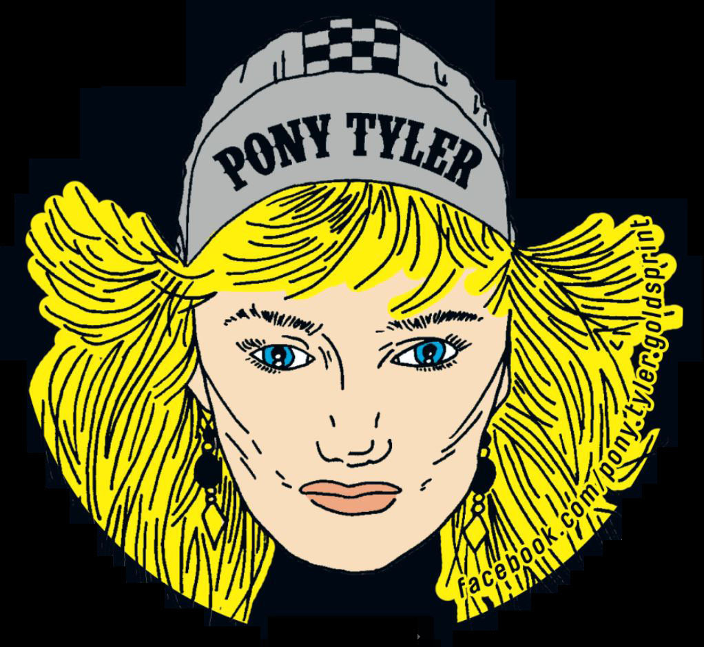
Pony
Tyler
Goldsprint + Massenkaraoke
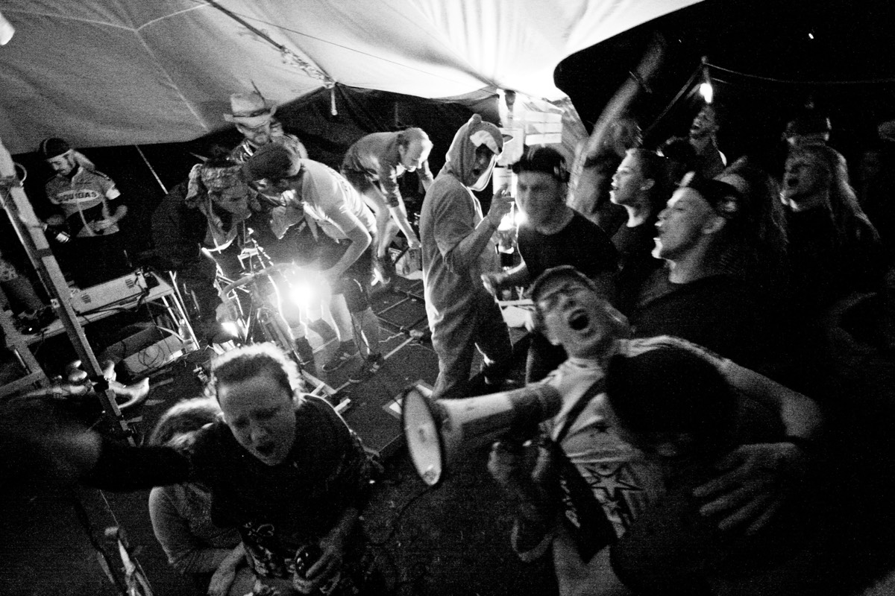
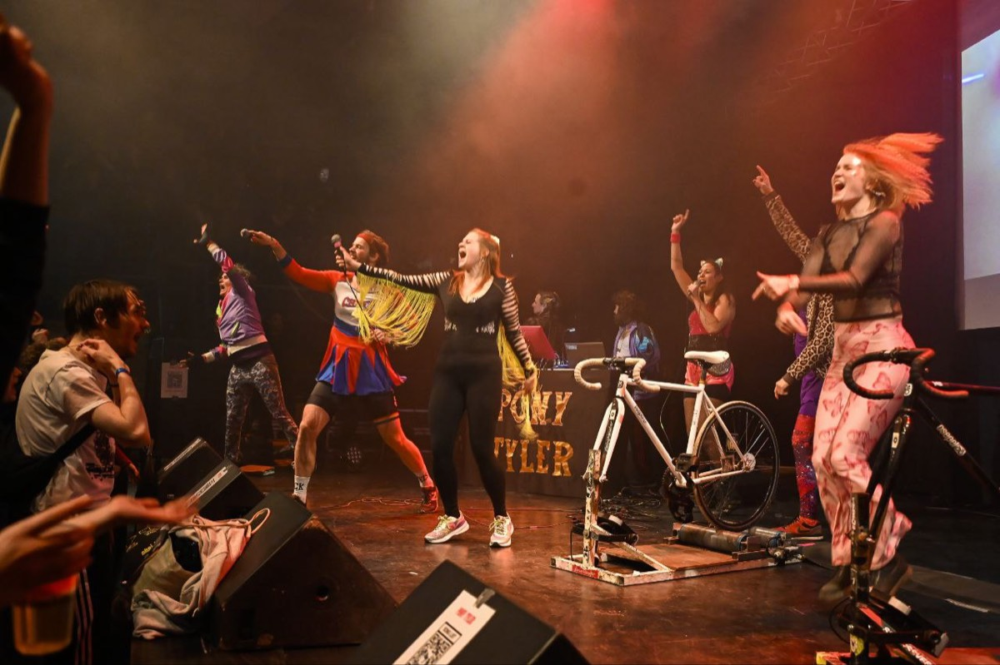
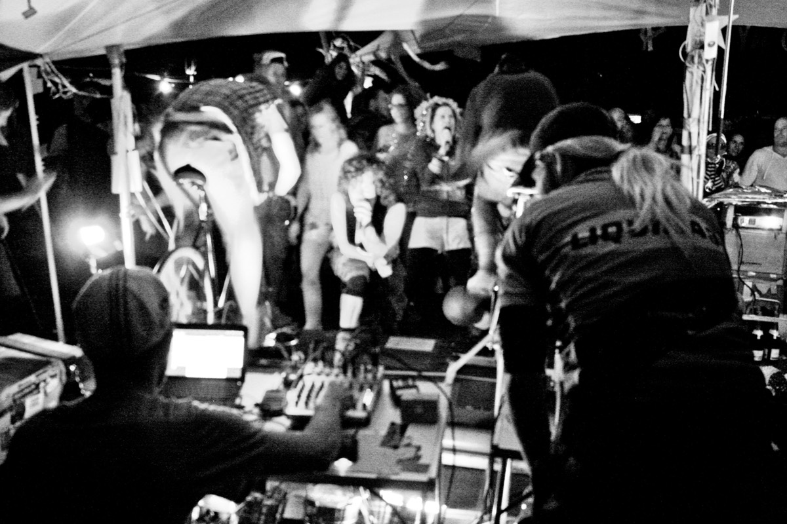
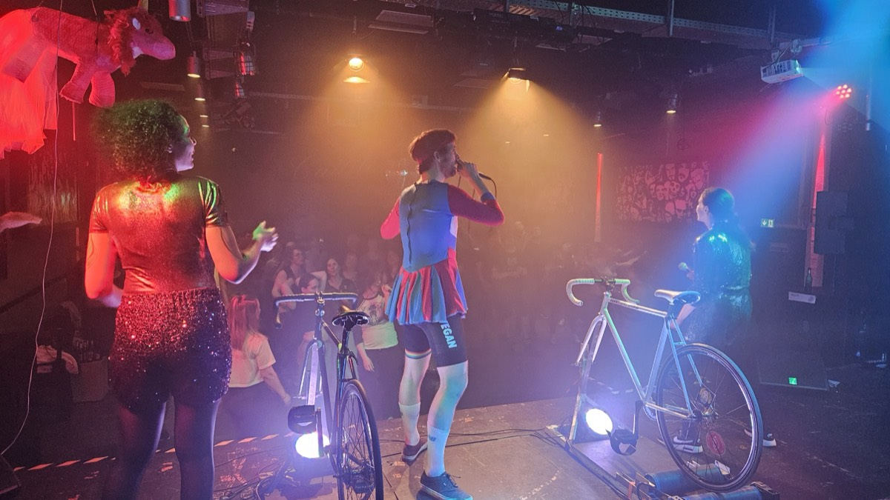
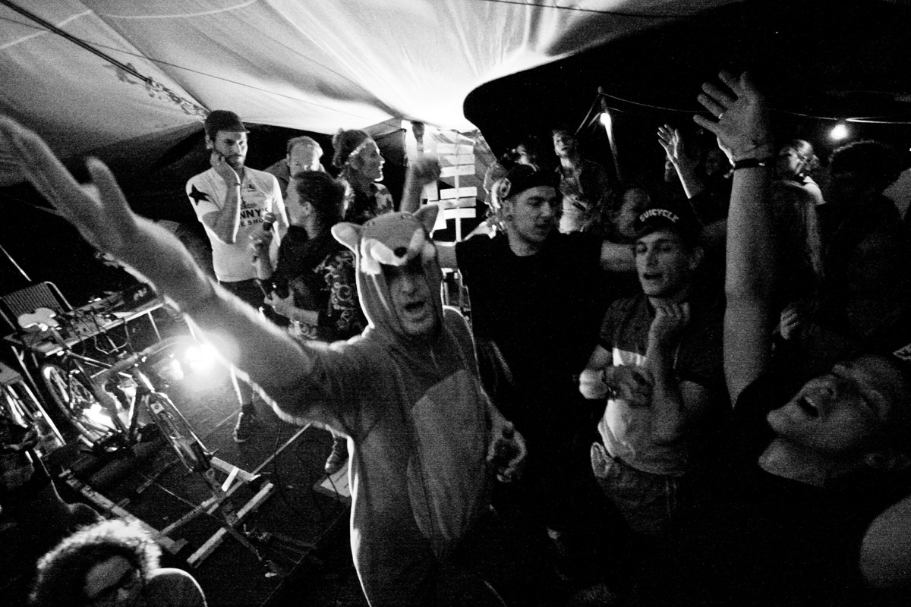
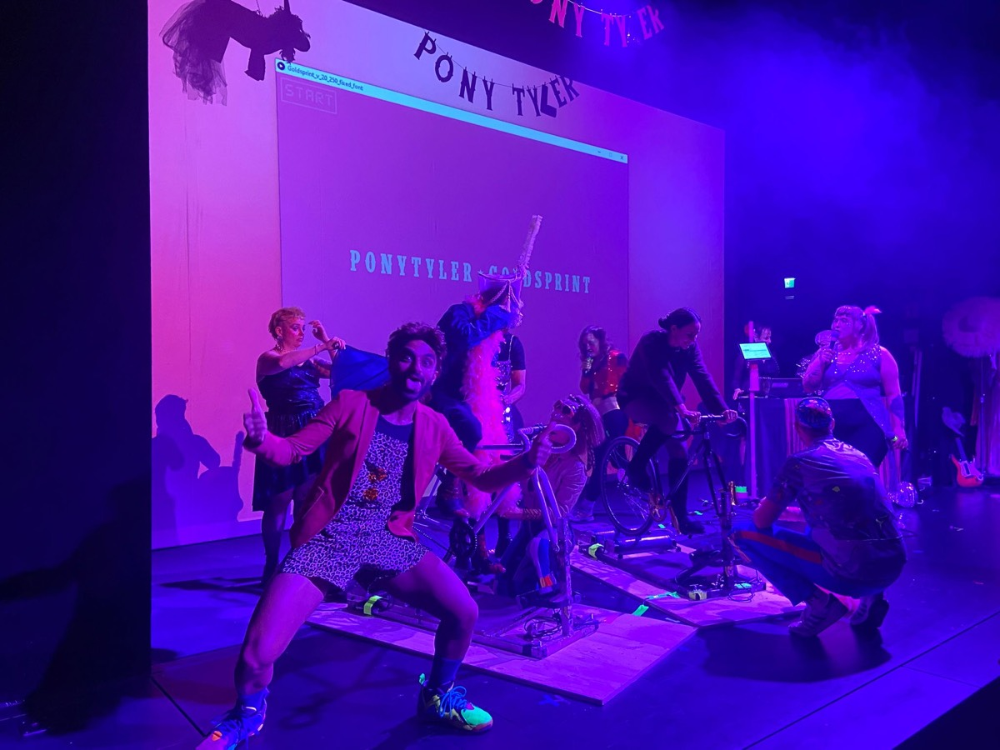
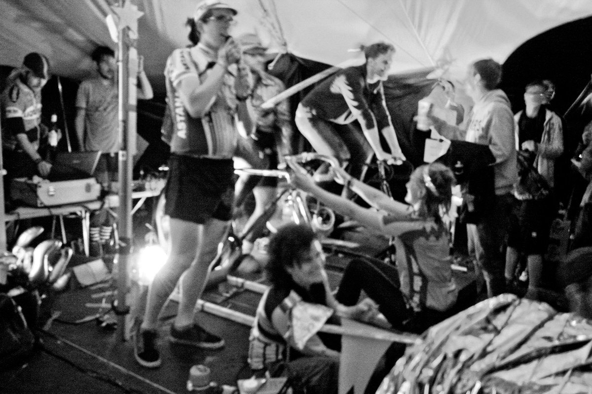
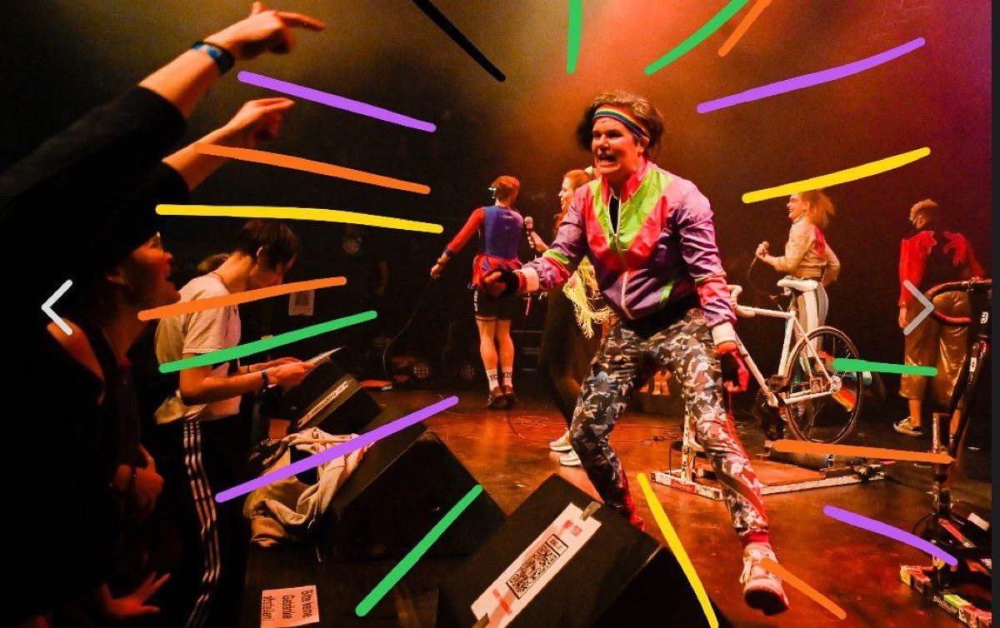
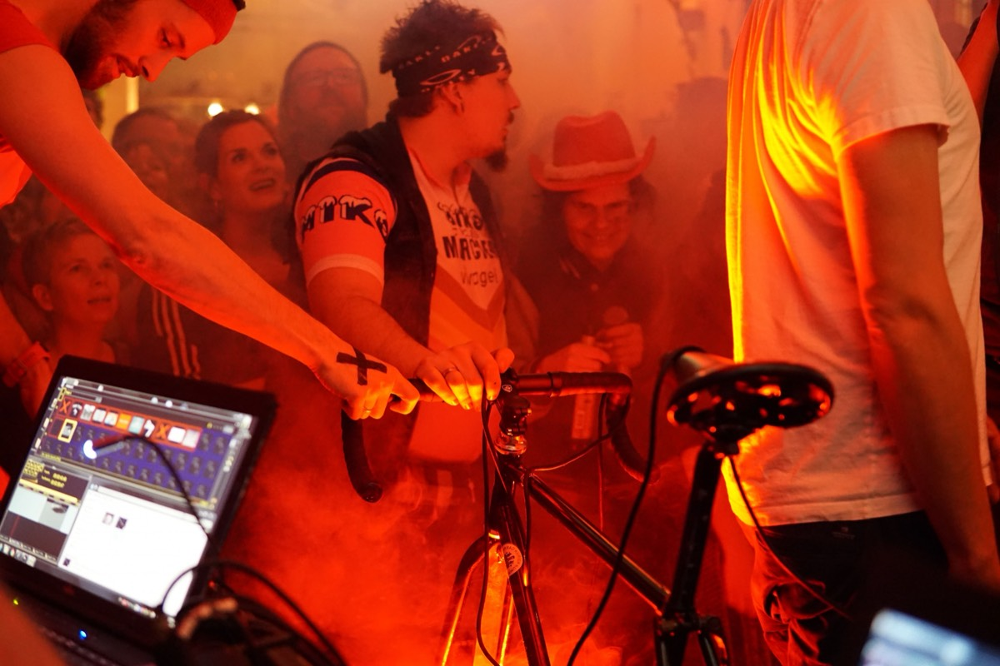
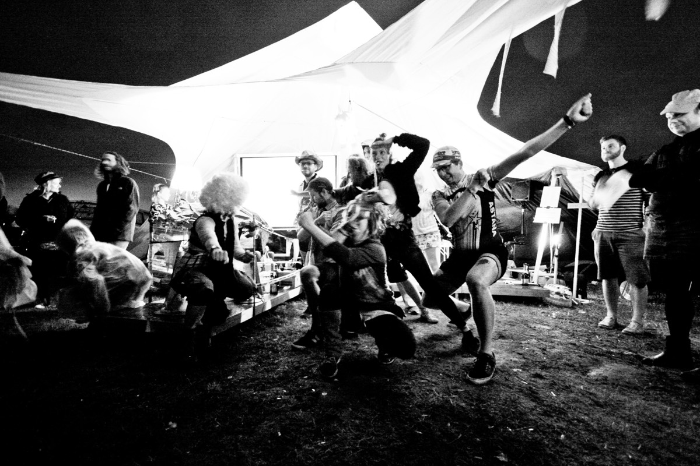
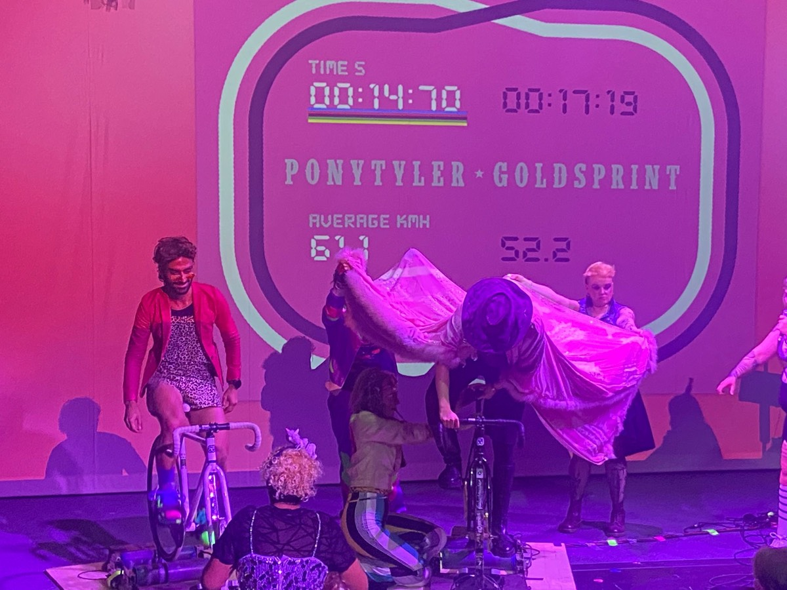
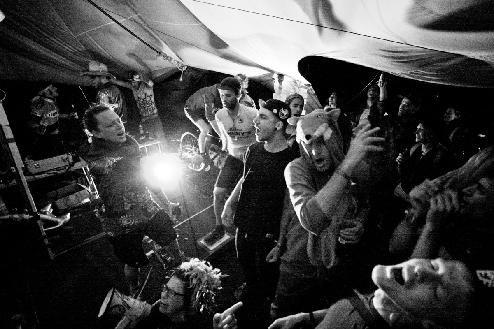
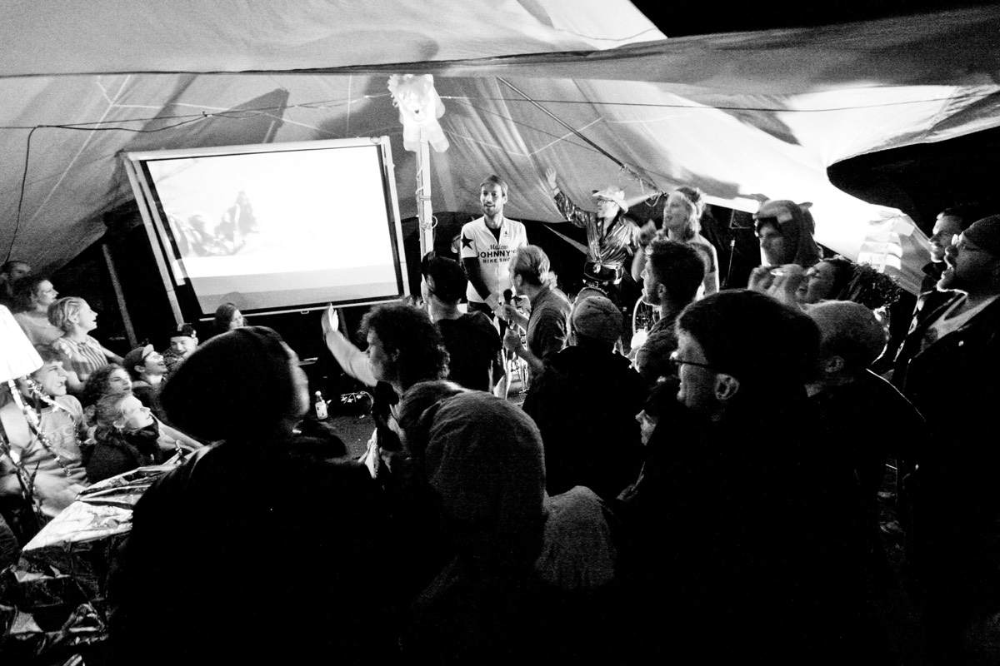
Pony wer!?
Wir sind Pony Tyler – Massenkaraoke und Goldsprint aus Bremen und wir machen, wie der Name schon sagt, Massenkaraoke und Goldsprint. Auf jeden Fall sind wir so eine Mischung aus Performance Art, mobiler Karaoke-Bar, Goldsprint-Projekt und Bühnenchaos.
Timeline
In unserer Timeline findest du, was als nächstes ansteht.